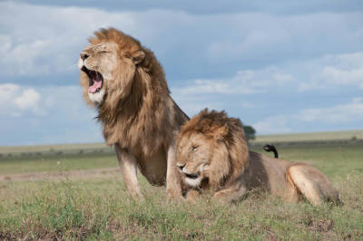

Leões
Os leões são conhecidos como "reis da selva", mas vivem em savanas e pastagens.
O rugido de um leão pode ser ouvido a até 8 km de distância.
Leões vivem em bandos liderados por machos e compostos por várias fêmeas e seus filhotes.
Os leões são conhecidos como "reis da selva", mas vivem em savanas e pastagens.
O rugido de um leão pode ser ouvido a até 8 km de distância.
Leões vivem em bandos liderados por machos e compostos por várias fêmeas e seus filhotes.